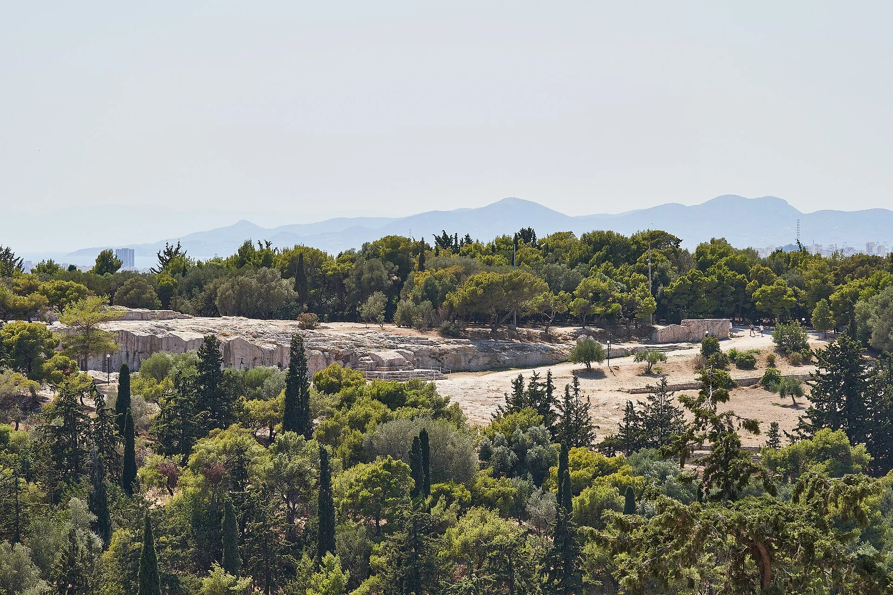

Antik Atina demokrasisi, özellikle MÖ 5. ve 4. yüzyıllarda yurttaşların kamusal kararlara doğrudan katıldığı bir yönetim biçimiydi. Bugünkü temsilî demokrasilerden farklı olarak yurttaşlar mecliste kendileri konuşup oy verebiliyor, bazı görevler kura yoluyla üstleniliyordu. Ancak bu katılım hakkı şehirde yaşayan herkese açık değildi; yurttaşlığın sınırları nüfusun büyük bölümünü siyasi kararların dışında bırakıyordu.
Demokrasi nasıl işliyordu?
Atina'da halk meclisi, yani ekklesia, yurttaşların savaş, barış, kamu harcamaları ve kararlar hakkında tartışıp oy kullandığı başlıca kurumlardan biriydi. Toplantılar Pnyks tepesinde yapılırdı. Konuların hazırlanmasında 500 üyeli Konsey (boulē) rol oynuyor; halk mahkemeleri ve yıllık görevler yönetim sisteminin diğer parçalarını oluşturuyordu.
Birçok kamu görevinin kura ile dağıtılması, yönetimin yalnızca kalıcı bir seçkin grubun elinde toplanmasını önlemeyi amaçlıyordu. Bazı askerî ve mali görevlerde ise seçim yapılıyordu. Uygulamalar dönem içinde değişti; “Atina demokrasisi” tek biçimli, hiç değişmeden yürüyen bir sistem değildi.
“Halk” kimlerden oluşuyordu?
Siyasi haklar, belirli yurttaşlık koşullarını taşıyan yetişkin erkeklere aitti. Aristoteles'e atfedilen Atinalıların Anayasası, yurttaş kaydının 18 yaşında yapıldığını ve dönemin yurttaşlık kurallarını anlatır. MÖ 5. yüzyılda Perikles'le ilişkilendirilen yasa, yurttaşlığı anne ve babası da yurttaş olan kişilerle sınırlandırdı.
Atina'da yaşayan kadınlar mecliste oy kullanamıyor veya siyasi görev üstlenemiyordu. Yerleşik yabancılar (metoikoi) ile köleleştirilmiş insanlar da siyasi yurttaşlık haklarından dışlanmıştı. Dolayısıyla “halk yönetimi”, Atina sakinlerinin tamamının kendi yönetimine katıldığı anlamına gelmiyordu. Eski kaynakların ve modern araştırmacıların nüfus tahminleri değişse de yurttaşlar toplam nüfusun yalnızca bir bölümünü oluşturuyordu.
Birincil kaynakları nasıl okumalı?
Antik Atina'yı anlatan kaynakların çoğu, siyasi haklardan yararlanan erkek yurttaşlar tarafından yazıldı. Perikles'in Thukydides'te aktarılan cenaze konuşması, Atina'nın eşitlik ve katılım ideallerini över; ancak bu bir tören konuşmasıdır, toplumun her üyesinin deneyimini tarafsız biçimde kaydeden bir nüfus raporu değildir.
Aristoteles'in Atinalıların Anayasası ise yurttaşlık kuralları ve kurumlar hakkında ayrıntı verir. Bu metin de kendi tarihsel bağlamında değerlendirilmelidir. Konuşmaları, yasaları ve kurum tariflerini arkeolojik bulgularla birlikte okuyarak hem sistemin nasıl işlediğini hem de kaynakların neleri dışarıda bıraktığını daha iyi anlayabiliriz.
Bugünkü demokrasiyle aynı mı?
Modern demokrasiler çoğunlukla seçilmiş temsilciler, geniş hukuki yurttaşlık ve eşit siyasi haklar ilkelerine dayanır. Atina'da ise uygun yurttaşlar birçok kararı doğrudan mecliste tartışıp alıyordu; siyasi üyelik dar ve dışlayıcıydı. Bu nedenle antik sistemi bugünkü ölçülere göre doğrudan “tam demokrasi” diye nitelemek yanıltıcı olabilir.
Yine de Atina örneği, ortak kararların nasıl alınacağı, yurttaşların kamusal sorumlulukları ve çoğunluğun gücünün nasıl sınırlanacağı üzerine düşünce tarihinde önemli bir yer tutar. Tarihsel değeri, bugünkü demokrasinin aynısını kurmuş olmasında değil; doğrudan katılımın imkânlarını ve dışlama bedellerini görünür kılmasındadır.
Kaynaklar
- Cartwright, M. Athenian Democracy. World History Encyclopedia. Meclis, Konsey, kura ile görev ve siyasi katılımın sınırlarına genel bakış. World History Encyclopedia.
- Aristoteles'e atfedilen, H. Rackham çevirisi. Athenaion Politeia (Atinalıların Anayasası), bölüm 26 ve 42. Yurttaşlık koşulları ve genç yurttaşların kaydı hakkında antik kaynak. Perseus Digital Library, bölüm 26; bölüm 42.
- Thukydides. Peloponez Savaşı, 2.35–2.46 (Perikles'in cenaze konuşması). Atina'nın kendisini nasıl sunduğunu gösteren birincil kaynak; törensel retorik bağlamıyla okunmalıdır. Perseus Digital Library, 2.35.
- American School of Classical Studies at Athens. The Athenian Agora Excavations. Agora alanındaki arkeolojik araştırma ve yayın kayıtları. Agora araştırma arşivi.
- George E. Koronaios. The Pnyx plateau on July 11, 2021. Pnyks fotoğrafı; Wikimedia Commons kaydı, CC BY-SA 4.0.
Antik kurumlar yüzyıllar içinde değişti; burada özellikle MÖ 5. ve 4. yüzyıl Atinasına odaklanılmıştır. Antik metinler kendi amaçları ve sınırlılıkları gözetilerek kullanılmıştır. Kaynaklar 8 Kasım 2026 tarihinde kontrol edildi.